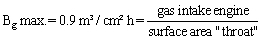
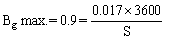
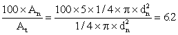

Table of conversion factors and symbols (used in this manual)
The gasifier will be designed for operation in conjunction with the engine from Annex I.
A. Biomass consumption gasifier
The thermal efficiency of the gasifier is taken at 70 per cent
Thermal power consumption (full load): Pg/0.7 = 116.6 kW
Heating value of biomass (14% moisture content): 17000 kJ/kg
Biomass consumption gasifier: 116.6/17000 = 0.0069 kg/s = 24.7 kg/in
So the installation under consideration uses 24.7/18.3 = 1.35 kg biomass to produce 1 kWh electricity.
B. Reactor design
For a double throat gasifier (see Chapter IV) holds:


S = surface area "throat" = 68 cm² = 1/4 x (dthroat)² x dthroat = 9.3
The turn down ratio of this type of gasifier can be estimated at a factor 3 (see Chapter 3).
So at loads below 6.1 kVA, tar production of this installation can be expected.
C. Further gasifies dimensions
Once the throat diameter has been fixed, further important gasifier dimensions can be derived from figures 3.3. and 3.4 (Chapter 3).
1. Height h of the nozzle plane above the smallest cross-section of the throat (dthroat = dt).h/dt = 1.15
h = 1.15 x 9.3 = 10.7 cm2. Diameter (dr) of the fire box.
dr/dt = 3.0
dr = 3.1 x 9.3 = 29 cm3. Diameter (drl) of nozzle top ring
drl/dt = 2.3
drl = 2.3 x 9.3 = 21.4 cm4. Nozzle diameter (dn)
Assumption: gasifier to be equipped with 5 nozzles
Total nozzle area (An): 5 x 1/4 x p x dn²

dn = 10.4 mm
|
Energy Units |
|
J = Joule |
|
kJ = 1000 J |
|
GJ = 1000000000 J |
|
kWh = 3600000J |
|
TWh = 3.6 x 1015 J |
|
Power Units |
|
W = Watt |
|
kW = 1000 W |
|
MW = 1000000 W |
|
HP = Horse Power = 745.7 W |
|
kVA = kilo Volt-Ampere |
|
Force Units |
|
N = Newton |
|
kgf = force kilogram |
|
t = ton = 1000 kgf |
|
Pressure Units |
|
Pa = Pascal = N/m² |
|
kgf/cm² = 98067 Pa |
|
mm Wg = 9.8067 Pa |
|
cm Wg = 98.067 Pa |
|
atm =1.0133 x 105 Pa |
|
Length Units |
|
m = meter |
|
cm = 0.1 m |
|
mm = 0.001 m |
|
km = 1000 m |
|
m m = 0.000.001 m |
|
Surface Units |
|
m²= square meter |
|
cm = 0.01 m |
|
Mass Units |
|
kg = kilogram |
|
mg = 0.000.001 kg |
|
g = 0.001 kg |
|
Time Units |
|
s = second |
|
min = minute = 60 s |
|
h = hour = 3600 s |
|
yr = year |
|
Volume Units |
|
m³ = cubic meter |
|
dm³ = 0.001 m³ |
|
mm³ = 0.000000001 m³ |
|
1 = litre = 1 dm³ |
|
Temperature Units |
|
K = Kelvin |
|
°C = degree Celsius |
|
1° C = 1 K |
|
Miscellaneous |
|
Nm³ = normal cubic metre (at 1 atm and 0°C) |
|
mol = quantity of matter unit |
|
gram atom = atomic weight expressed in grams |
|
gram molecule = molecular weight expressed in grams |
|
ppm = parts per million |
|
rpm = revolutions per minute |
|
° = angular degrees |
|
person-km = one person transported one km |
|
ton-km = one ton transported one km |
|
man-yr = one man working one year |
|
Other Units |
|
Hz = Hertz (frequency) |
|
V = Volt |
|
Currencies |
|
US$ = U.S.A. dollars |
|
|
|
Hfl = Dutch florin |